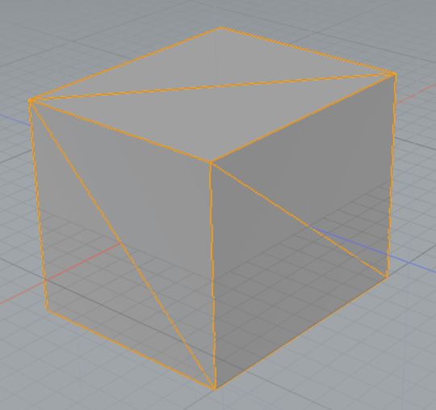
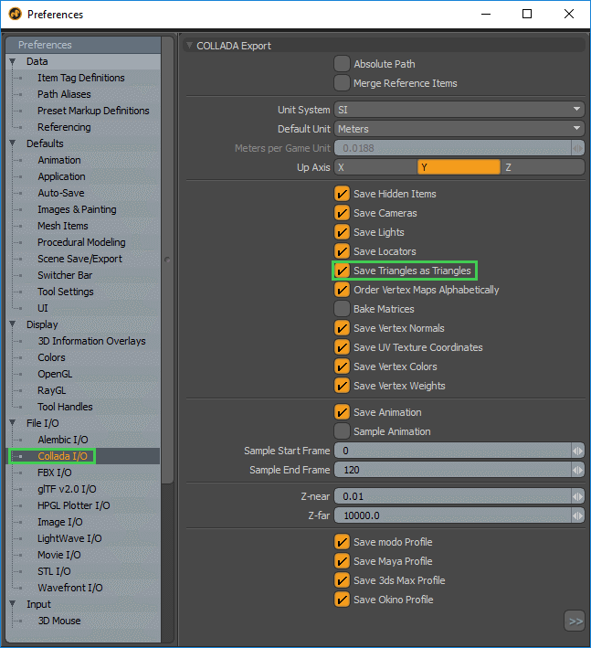

Exporting from Modo
Exporting COLLADA from Modo
- With the mesh object selected, triangulate the mesh by pressing Shift+T.

- Next, select System > Preferences from the menu bar to configure the COLLADA exporter.
- In the preferences dialog box, locate the Collada I/O section under File I/O. Ensure that the Save Triangles as Triangles option is checked.

- Close the preferences dialog box.
- From the menu bar, select File > Export As.
- Select Collada in the Save as Type drop-down list.
- Press Save.
Exporting FBX from Modo
- With the mesh object selected, triangulate the mesh by pressing Shift+T.
- From the menu bar, select File > Export As.
- Select FBX in the Save as Type drop-down list.
- Select Save.